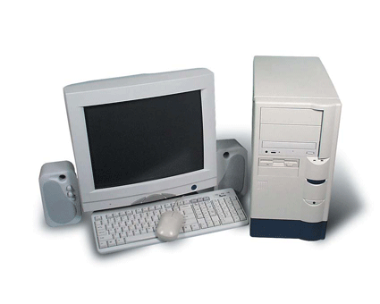

WHAT IS COMPUTER?
A COMPUTER IS AN ELECTRONICE DEVICES WHICHN TAKES RAW INPUT DATA FROM USER AND PROCESSED IT AND GIVES THE OUTPUT/RESULT.
IT IS AN ELECTRONIC DEVICE MADE UP OF HARDWARE AND SOFTWARE.
IT RUNS THROUGH ELECTRICITY.
IT WAS FIRST MADE AS CALCULATING DEVICES.
AS IT CAN CALCULATE THE SIMPLE AIRTHMETIC PROBLEMS
AND SOLVE SIMPLE ADDITION,SUBTRACTION,MULTIPLICATION AND DIVISION PROBLEMS OF MATHS.
THESE TWO ARE THE MAIN COMPUTER ON THE BASIS OF SIZE AND USES.THEY HAVE THEIR OWN IMPORTANCE AND USE IN RESPECTIVE FIELD.
BUT THEIR PRIMARY TASK IS SAME. EXAMPLES:DESKTOP,LAPTOP,PALMTOP,etc.

THEY ARE SMALLER IN SIZES AND OCCUPIES SMALL AREA. AS NAME ITSELF IS SUGGESTING MICRO MEANS SMALL.
IT DOESNOT REQUIRE LARGE AREA.IT ALSO CONSUMES LESS ELECTRICITY AND POWER.
THEY ARE LARGER IN SIZE AND OCCUPIES LARGE AREA. THEY ARE USED IN COMPANY, INSTUTIONS, SCIENTIFIC LABS AND SERVER ROOMS.
EXAMPLES:SUPER COMPUTER,SERVER COMPUTER,MAINFRAME etc.